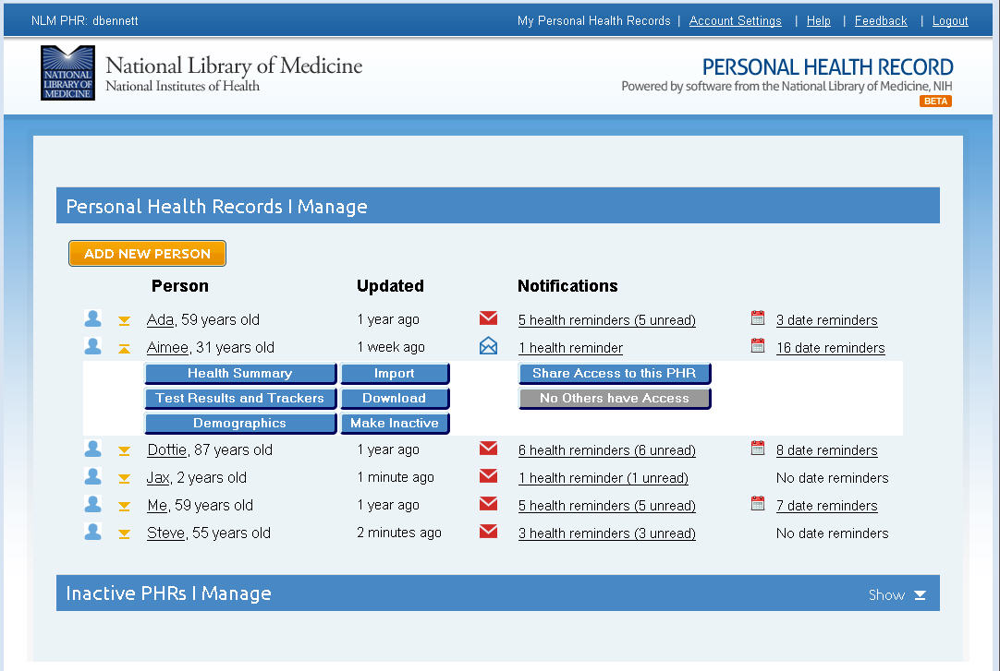

Chapter 3
3. The PHR Home Page
The PHR Home page provides you with a summary of all of the PHRs that you create under your account and includes the option to create additional PHRs by clicking the Add New Person button. The page is separated into active and inactive PHRs. Active PHRs are located in the Personal Health Records I Manage section and inactive PHRs are located in the Inactive PHRs I Manage section of the Home page.
-
3.1. Personal Health Records I Manage
New and existing Health Reminders and Date Reminders are located next to each PHR. Expand any PHR entry by clicking the yellow expand button next to the record name. Expanding the PHR entry will allow you to navigate directly to the section of the PHR you want to access.
-

The expanded entry contains the following buttons:
-
Health Summary
Takes you to the Health Summary page of the person’s PHR.
Test Results and Trackers
Takes you to the Test Results and Trackers page of the person’s PHR.
Demographics
Allows you to change the basic information of the PHR, including the PHR name, birthdate, gender, and ethnicity.
Import
This functionality has not yet been implemented.
Download
Allows you to download the PHR to a file on your computer. You can use most spreadsheet programs to view the information and to print a copy
Make Inactive
Removes the PHR from the Personal Health Records I Manage section of the Home page and move it to the Inactive PHRs I Manage section of the Home page. You can make a PHR inactive in order to prepare it for deletion.
Share Access
Allows you to issue a share invitation to a trusted family member or health care provider.
Shared button
Provides you with sharing information about the PHR.
-
3.2. Inactive PHRs I Manage
The Inactive PHRs I Manage section of the PHR Home page contains a list all PHRs that you have made inactive using the Make Inactive button. By default, inactive PHRs are not automatically displayed on the PHR Home page, however, clicking the Show button on the right side of the Inactive PHRS I Manage banner will display a list of your inactive PHRs.